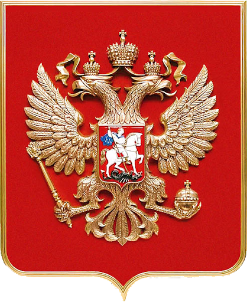
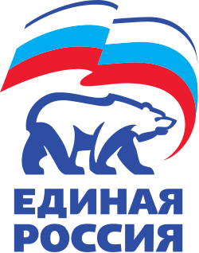
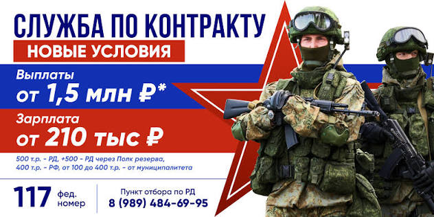

русский национальный браузер
Браузер, который говорит по-русски, защищает наш интернет
и помогает оставаться в своём, родном пространстве.
Алешенька — это не просто ещё один браузер. Это национальный проект: он сделан для нас и вокруг наших сервисов. Открывая его, вы попадаете в привычный, понятный и родной интернет — без чуждых шумов и навязчивых иностранных платформ.
Домашняя страница — это портал наших сервисов: поиск Яндекса, Госуслуги, МАКС, ВКонтакте, ВК Видео.
Каждый сайт проходит проверку. На не русские сайты мы просто не пускаем — и подсказываем наш российский аналог.
Сине-бело-красные акценты, национальные цвета и гордое название — от загрузки до последней вкладки.
Сделано своими руками на Java и JavaFX. Лёгкий, быстрый и понятный каждому.
Герб России и трёхцветный флаг для нас не просто украшение — это то, зачем мы делаем Алешеньку.

«Славься, Отечество наше свободное — братских народов союз вековой, Предками данная мудрость народная! Славься, страна! Мы гордимся тобой!»
Мы строим Алешеньку как маленькую Россию в вашем компьютере — с её цветами, честью и памятью.
Знамя нашей страны — белый, синий и красный. Цвета чести, веры и силы.
Символ державы, что встречает врагов и защищает своих во все века.
Помним о тех, кто стоит на рубеже. Вера в победу и в наших.
YouTube, Google, Instagram, Facebook, TikTok, Netflix и другие иностранные платформы не отвлекают вас — Алешенька честно предупреждает и не пропускает.
Вместо YouTube — ВК Видео, вместо Google — Яндекс, вместо чужих соцсетей — ВКонтакте и Одноклассники, вместо иностранных мессенджеров — МАКС.
В статусной строке всегда видно: «Российский сайт» — зелёным, «Иностранный сайт» — красным. Своих видно сразу.
«Интернет под защитой национального браузера Алешенька» — мы отвечаем за каждое слово и за каждую вкладку.
Поиск идёт только через Яндекс — надёжно и по-нашему.
Яндекс, Почта Mail.ru и мессенджер МАКС — всегда под рукой.
Экран проверки с национальными цветами перед каждым входом на сайт.
Один клик — и вы уже на нашем сервисе вместо чужого.
Уютный ретро-интерфейс, который любят все наши.
Никакой рекламы зарубежных корпораций — только наше.
Три простых шага — и интернет снова становится нашим.
Загрузите Алешеньку — установка занимает меньше минуты и ничего не требует от вас.
Перед каждым входом браузер проводит проверку безопасности в национальных цветах.
Чужие платформы заблокированы, свои — всегда под рукой. Ничего лишнего.

Национальный браузер Алешенька создан в духе наших ценностей: патриотизм, свои сервисы и сильная страна. Мы за то, чтобы интернет оставался нашим — без чуждого влияния и навязывания чужой культуры.
«Своих не бросаем» — это и про наши сайты, и про нашу сеть.
Сайт является неофициальным проектом авторов и выражает их мнение. Плашка и упоминание использованы как знак уважения к партии.

Контрактная служба — это стабильность, честная оплата и уважение к тому, кто служит. Служи Родине там, где это важнее всего.
Узнать больше«Открыл Алешеньку — и как будто домой вернулся. Всё своё, всё понятное.»
«Наконец-то браузер, который думает о нас. Никакого YouTube — только наше.»
«Кнопка "открыть российский аналог" — гениально. Свои сервисы под рукой.»
Да, полностью. Без регистраций, подписок и скрытых платежей. Бесплатно и навсегда.
Не русские сайты: YouTube, Google, Instagram, Facebook, TikTok, Netflix и другие иностранные платформы. Вместо них браузер предлагает наши аналоги.
Браузер сам пробует загрузить страницу ещё раз. Если это не помогает — нажмите «Вернуться назад» и выберите российский сервис.
Сейчас — Windows 10 и 11. В планах — наша операционная система и наши платформы.
Это наше, родное, домашнее имя. Простое, тёплое и по-настоящему своё.
Установите русский национальный браузер и почувствуйте себя как дома. Бесплатно, без регистрации и без лишних вопросов.
Пока сайт в разработке — просто запустите run.bat из папки проекта. Скоро здесь будет готовый установщик.